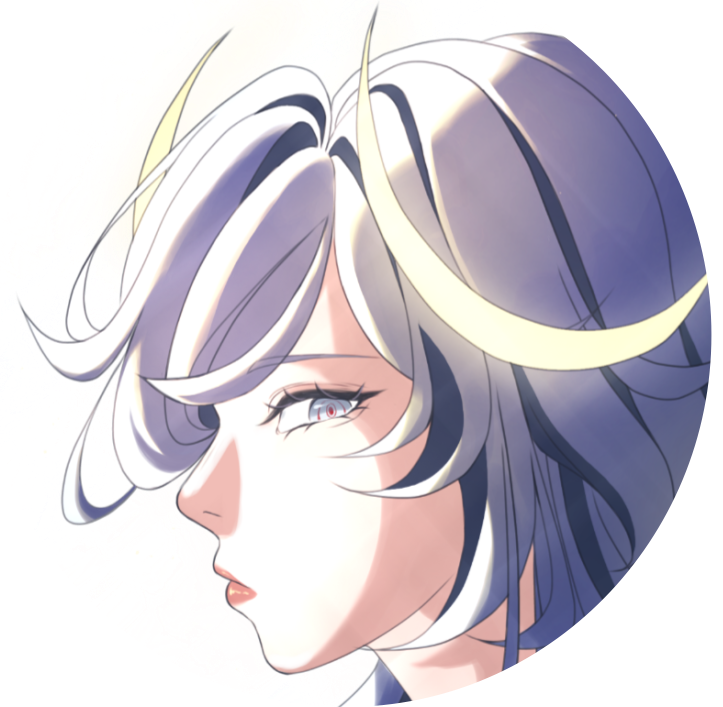

Kelly Lin

Summary
I'm a senior at Hunter College majoring in Computer Science and minoring in Media Studies. I enjoy art and design, and aspire to improve accessibility for marginalized populations.
Education
Computer Science BA, Hunter College City University of New York (2021 - 2025)
Work Experience
Patina Network
Implemented a responsive company website for Patina Network’s website using HTML, CSS, React, and
TypeScript
Directed mobile responsiveness and accessibility features on the company website to ensure user functionality
Led discussions with UI/UX design teams and management to discuss and implement website features and designs
In Creative Company
Revitalized old company website pages using Webflow and Javascript embeds to fit new brand direction
Strategized with company leaders to implement environmental sustainability initiatives in company branding
Skills
Languages: Python, C/C++, Java, JavaScript, TypeScript
Developer Tools: Git, Visual Studio Code, IntelliJ, Sublime Merge, PgAdmin, Postman
Leadership
President, Girls Who Code at Hunter College (2024 - Present)
Contact Me
LinkedIn